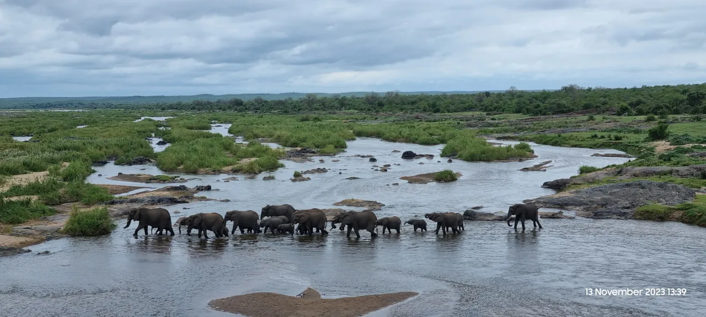

Travel · South Africa
The Kruger Roar: A Safari for Your Soul

Forget zoos. Forget documentaries. Forget any preconceived notion of what "wild" means. Now, picture this: the air is electric with anticipation, the sun is just beginning to paint the sky in shades of orange and pink, and you're holding your breath, scanning the horizon. Every rustle in the grass, every distant bird call could be it.
Welcome to Kruger National Park, South Africa's crown jewel. This isn't just a park; it's a sprawling kingdom, an ancient theatre of life and death that is raw, real, and absolutely riveting. Prepare for one of the greatest adventures on Earth.
A Kingdom the Size of a Country
First, let's talk scale. Kruger is immense. At nearly 2 million hectares, it's roughly the size of Israel or Wales. You can drive for hours and see nothing but endless golden savanna, dense riverine bush, and granite koppies (hills) that have stood for millennia. This isn't a curated exhibit; it's a functioning ecosystem on a colossal scale, where you are just a temporary, humble guest. The feeling of being truly out in the wild is both humbling and exhilarating.
The Thrill of the Chase: It's All in the Timing
The rhythm of Kruger revolves around one thing: the game drive. It's a treasure hunt where the treasure has teeth, claws, and a mind of its own. And if you want to strike gold, you need to play by the rules of the wild.
The data doesn't lie, and the old safari hands will tell you the same thing: the early bird gets the wildebeest! The magic hours are dawn, specifically between 6 AM and 8 AM, when the air is cool and the predators are still on the move from their nocturnal hunts. This is when you're most likely to spot the park's superstars. As the African sun climbs higher, the animals wisely retreat to the shade, and the sightings slow down. So set that alarm—the sunrise you'll witness is worth the early start a thousand times over.
The Superstars of the Savanna
While every creature in Kruger is part of its intricate web, let's be honest, some have a special star power. You'll be happy to know that sightings of the big predators are more common than you might think. Analysis of thousands of recent sightings shows that lions, leopards, and hyenas consistently top the charts. There's nothing on Earth that can prepare you for the moment you lock eyes with a majestic lion lounging in the grass or spot the elusive rosette pattern of a leopard draped over a tree branch.
And the best part? The experience is almost universally mind-blowing. The vast majority of wildlife sightings in Kruger receive top-tier satisfaction ratings (4 or 5 out of 5). It's a testament to the sheer wonder of seeing these animals thriving in their natural habitat.
More Than Just the Big Names
But the magic of Kruger is also in the supporting cast. It's in the comical waddle of a warthog, the elegant grace of a giraffe, the massive herds of buffalo, and the rainbow of birdlife, from the magnificent martial eagle to the tiny, iridescent sunbirds. It's about stopping the car to let a giant elephant cross the road just metres in front of you, feeling the ground vibrate with its sheer presence. Every moment is a discovery.
Kruger is more than a holiday; it's a powerful reminder of the wild world that still exists. It's a place of incredible beauty, heart-stopping excitement, and profound peace. It will reset your perspective and fill your soul.
Insights from Kruger National Park Wildlife Sightings! 🦁📊
Ever wondered what you're most likely to see in Kruger National Park and when? I analyzed a dataset of recent wildlife sightings (over 13,900 entries!) and found some fascinating patterns:
Key Takeaways:
- Predator Power: Lions, Leopards, and Hyenas dominate the sightings list! Makes sense, as these are often the most sought-after and reported sightings.
- High Satisfaction: Most sightings received very high ratings (4 or 5 out of 5), showing the incredible experiences Kruger offers.
- Early Bird Gets the Worm (or Wildebeest!): The best time for sightings is definitely the early morning, peaking between 6 AM and 8 AM, then gradually decreasing throughout the day.
It's amazing what data can tell us about wildlife patterns! This analysis provides a glimpse into the rhythm of life in one of Africa's greatest wilderness areas.